地政学
アルウラは紅海、マディーナ、レバントを結ぶヒジャーズの内陸路にあり、古代交易と巡礼路の記憶を抱えます。現在は観光外交と文化投資の前線で、サウジ国家像の転換を示す重要な地方都市でもあります。世界にも開きます。
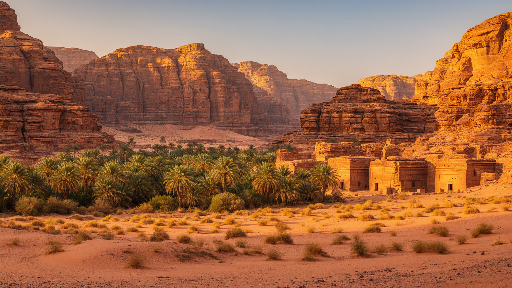
🇸🇦 サウジアラビア / マディーナ州 / World City Atlas
ヒジャーズの砂岩峡谷とナツメヤシのオアシスに、ヘグラ、ダダーン、リヒヤーン、巡礼路、観光開発、保全の制度、住民の日常が重なる砂漠の遺産都市です。
都市の骨格
アルウラは、ナツメヤシの谷と砂岩の山地に沿って広がる小さな生活都市でありながら、サウジアラビアが脱石油時代の文化観光を示す舞台でもあります。遺跡、農地、保護区、ホテル、空港、住民の住宅が、急速な変化の中で近接しています。
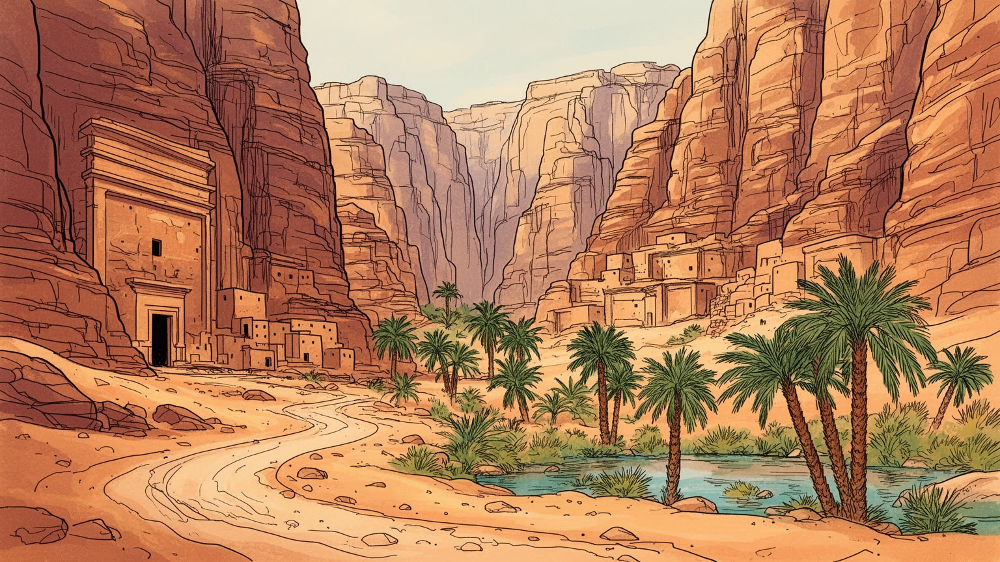
アルウラは紅海、マディーナ、レバントを結ぶヒジャーズの内陸路にあり、古代交易と巡礼路の記憶を抱えます。現在は観光外交と文化投資の前線で、サウジ国家像の転換を示す重要な地方都市でもあります。世界にも開きます。
雇用は農業、行政、建設、宿泊、案内、保全、イベント運営へ広がります。巨大開発は若者に技能と収入を与える一方、土地、家賃、季節雇用、外部資本への依存を生みます。観光の成長は家計に近い問題です。暮らしも変えます。
ダダーン、リヒヤーン、ナバテア、イスラムの巡礼路が重なり、現在の町はモスク、家族、部族記憶、祭りで動きます。古代の石碑を読むことは、信仰と交易が砂漠で交差した時間を読むことでもあります。今も響いている場です。
旅行者はヘグラや奇岩を巡るが、住民は学校、農園、商店、病院、家族訪問を日々行き来します。高級リゾートの外側には、水、暑さ、交通、住宅、雇用をめぐる普通の生活が続きます。観光地であり生活圏でもある街なのです。
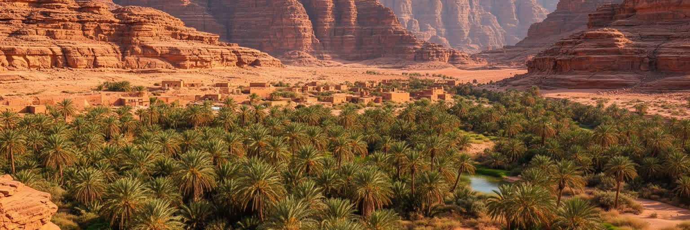
アルウラの都市性は、まず砂岩の山地とワディがつくる細長い地形から始まります。赤みを帯びた崖、乾いた河床、地下水を利用した農地、ナツメヤシの列、集落を結ぶ道路が、広大な県域の中で人の居場所を限定してきました。雨は少ないが、降れば谷に急な流れを生み、古代にも現在にも水の確保と排水が重要になります。オアシスは単なる緑の景観ではなく、交易路の休息、農業、家畜、住居、宗教施設を支えた都市インフラです。今日の観光客は奇岩や砂漠の静けさに引かれるが、住民にとって地形は通勤、通学、農作業、暑さを避ける時間、救急車が通る道を決める現実でもあります。周辺にはヘグラ、ダダーン、ジャバル・イクマ、旧市街、自然保護区が分散し、車の移動が都市体験の前提になります。谷を読むと、遺跡、ホテル、農園、住宅、空港、イベント会場がばらばらではなく、水と岩の条件に沿って配置されていることが見えてきます。砂漠の広さは孤立を意味せず、むしろ古代から人と物を集める結節点を生んできました。さらに、崖の影は歩行の時間を変え、谷底の農地は住宅の広がりを抑え、眺望のよい高台は新しい宿泊施設の場所を選ばせます。地形は背景ではなく、都市の成長を今も細かく誘導する力です。旅行者の眺望と住民の移動が同じ谷で交差するため、景観の保全は道路計画や農地管理とも切り離せません。
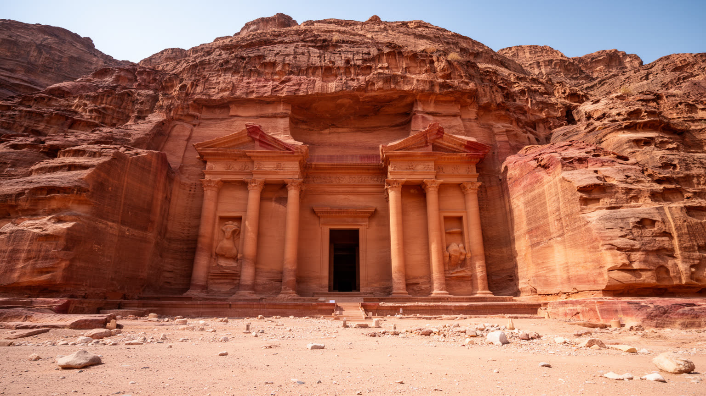
ヘグラは、アルウラを世界の遺産地図に置く中心的な場所です。砂岩の岩山に刻まれた巨大な墓の正面、碑文、井戸、集落跡は、ナバテア王国がペトラだけでなくアラビア北西部にも都市的な拠点を持っていたことを示します。交易路を通る香料、家畜、金属、布、人の移動は、砂漠の中の水場と安全な停泊地を必要とし、ヘグラはその条件を満たしました。岩窟墓の整ったファサードは、権力と家族の名誉を表す広告でもあり、墓の持ち主、職人、商人、宗教者の存在を今に伝えます。サウジアラビア初のユネスコ世界遺産としての意味も大きいです。長く国外観光に閉じられていた国が、古代アラビアの多層的な歴史を見せる象徴になったからです。ただし遺産は写真の背景ではありません。風化する砂岩、観光客の動線、保全のルール、地元の雇用、研究者の調査が一つの制度として動いています。ヘグラを都市として読むと、墓の壮麗さの奥に、交易が生んだ国際性、水をめぐる技術、死者を記憶する社会、現代国家の文化政策が重なって見えます。墓は静かに立つが、そこへ至る道には券売、案内、警備、修復、教育が連なり、古代都市は現代の仕事によって支えられています。保存の仕組みまで含めて見る時、ヘグラは生きた遺産になります。見学の静けさを守る案内も、遺跡の価値を現在の生活へつなぐ重要な都市サービスです。今も続きます。
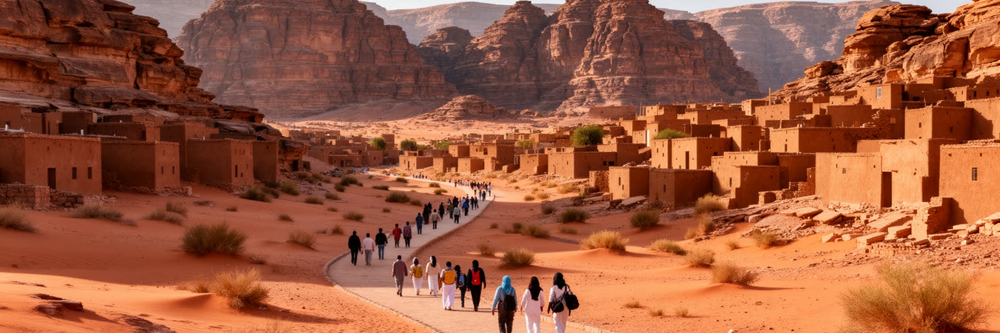
アルウラの近年の変化は、観光開発を抜きに語れません。王立委員会が設けられ、遺跡保全、道路、空港、宿泊施設、自然保護区、イベント、住民教育が一体で進められています。これは単なる地方の観光振興ではなく、サウジアラビアが石油依存を下げ、文化、娯楽、国際交流を前面に出す国家戦略の実験場です。高級リゾートやアートイベントは世界の旅行者を引きつけ、若者には案内、語学、ホスピタリティ、建設、保全の仕事を増やします。一方で、急速な投資は土地利用、住宅価格、雇用の安定、地元事業者の参加、外部資本への依存という問題も生みます。観光客数を増やすだけでは、地域の生活が豊かになるとは限りません。収入が農家、職人、運転手、清掃員、学校、医療、公共交通へ戻る仕組みが必要です。アルウラの開発は、砂漠の静けさや遺跡の脆さを商品化するほど、その価値を壊しかねない矛盾を持ちます。だから重要なのは、豪華な施設の数ではなく、保全と生活、地元雇用と外部投資、訪問者の快適さと住民の権利をどう調整するかです。建設期には外から技能者が入り、運営期には接客や管理の人材が必要になります。教育と職業訓練が地元に根づかなければ、開発の利益は通過してしまいます。観光は施設ではなく、人の能力を育てて初めて都市の財産になります。地域企業が調達や運営に加われるかも、観光都市としての持続性を左右します。
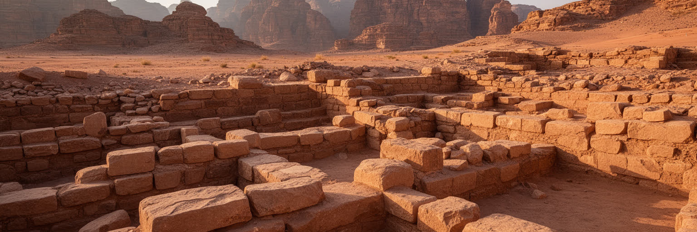
アルウラの深さは、ヘグラだけで終わりません。ダダーン、リヒヤーン、ジャバル・イクマ、旧市街、岩絵、碑文、墓、聖域、農地の跡が、何千年もの人の活動を重ねています。特に岩壁に刻まれた文字は、王や神だけでなく、旅人、商人、家族、祈願、所有、記念の痕跡を残し、砂漠が空白ではなく言葉の通った空間でしたことを示します。考古学は観光の飾りではなく、地域の自己理解を作り直す作業でもあります。発掘が進むほど、アラビア半島北西部は、孤立した辺境ではなく、レバント、紅海、メソポタミア、アラビア内陸を結ぶ知識と交易の回廊として見えてきます。調査には国際的な研究者、保存技術者、地元ガイド、学生が関わり、遺産の語り方そのものが更新されます。しかし発見が増えるほど、保存区域、住民の土地利用、観光導線、研究成果の公開方法も難しくなります。石の文字を読むことは、過去の人びとの声を現在の制度に翻訳することでもあります。アルウラは、古代史の展示場であると同時に、誰が歴史を解釈し、誰がその利益を受けるのかを問う場所です。考古学の成果は学校教育や地域ガイドの説明にも入り、若い世代が自分の町を語る言葉を増やします。発掘現場は過去を掘るだけでなく、未来の職能を育てる場所にもなります。公開方法が丁寧なら、発見は外部向けの話題だけでなく地域の誇りとして蓄積されます。
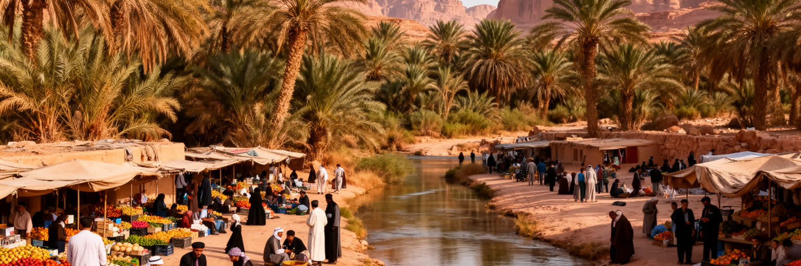
アルウラを訪れる人は遺跡やリゾートを見に来るが、町の基礎にはオアシスの暮らしがあります。ナツメヤシ農園、灌漑の水路、家族経営の店、学校、モスク、住宅、車での送迎、親族訪問が、観光の舞台のすぐ近くで続いています。農業はかつての生活基盤であり、現在も地域の記憶と食を支えます。ナツメヤシの管理には水、労働、季節の知識が必要で、収穫期には家族や雇用労働が動きます。観光開発によって新しい仕事が増える一方、若者が農業から離れたり、土地の価値が変わったり、外から来る労働者が増えたりします。住民にとって都市の変化は、道路が良くなることでもあり、静かな生活圏が観光の視線にさらされることでもあります。高級ホテルの快適さと、地元の住宅、暑い午後の店先、学校帰りの道は同じ都市にあります。オアシスの暮らしを読むと、アルウラの価値は古代の石だけでなく、水を分け、木を育て、家族を支え、客を迎えてきた日常の積み重ねにあると分かります。観光が長く続くためには、住民が単なる背景にならず、生活の質を高める主体として開発に参加できることが欠かせません。市場で売られるナツメヤシや家庭の食卓は、旅行者が短く見る風景より長い時間を持ちます。暮らしの側から見ると、都市の成功は来訪者数だけでなく、子どもが学び、若者が残り、高齢者が安心して暮らせるかで測られます。観光の予定表では見えにくい家族の時間が、都市の基礎を支えています。
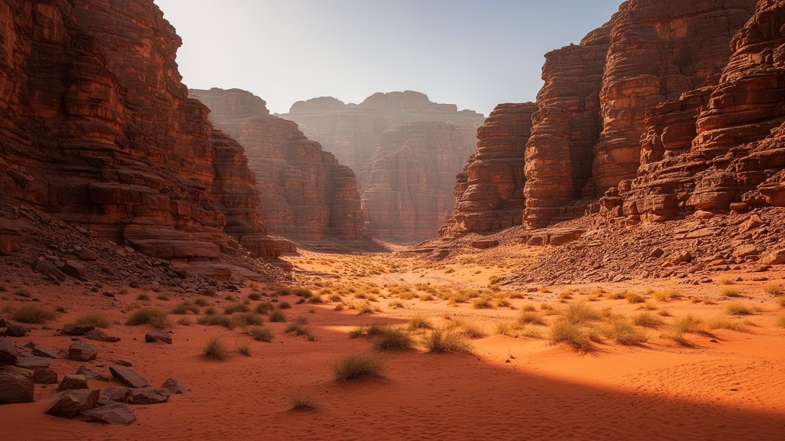
アルウラの気候は、都市の使い方を細かく決めています。夏の日差しは強く、乾燥した空気は体力を奪い、昼間の屋外活動には日陰、水分、移動手段が欠かせません。一方で冬の夜は冷え、砂漠の星空や屋外イベントの魅力を生みます。昼夜差が大きいことは、旅行者の服装だけでなく、農作業、建設、清掃、警備、ガイドの勤務時間にも影響します。古い集落では厚い壁、狭い路地、中庭、日陰が暑さを和らげる知恵として機能してきました。現代のホテルや展示施設は空調に頼るが、電力と水の消費を増やすため、環境負荷の管理が重要になります。雨は少ないが、短時間の強雨はワディに危険な流れを作り、道路や遺跡、観光客の安全を左右します。気候変動で暑さや豪雨のリスクが変われば、保全と観光運営の基準も見直さなければなりません。砂漠気候は美しい写真を生む条件であると同時に、働く人の健康、農業の水、建築の設計、訪問者数の季節配分を決める都市問題です。アルウラを理解するには、朝夕に人が動き、昼に静まり、夜に再び開く時間のリズムを読む必要があります。観光案内の時間割も、住民の買い物や礼拝の時間も、気温の変化に合わせて調整されます。快適さを保つ工夫は、建物の形、街路樹、休憩所、給水、夜間照明にまで及び、気候そのものが都市デザインの先生になります。暑さに配慮した休憩場所は、旅行者だけでなく屋外で働く人を守ります。
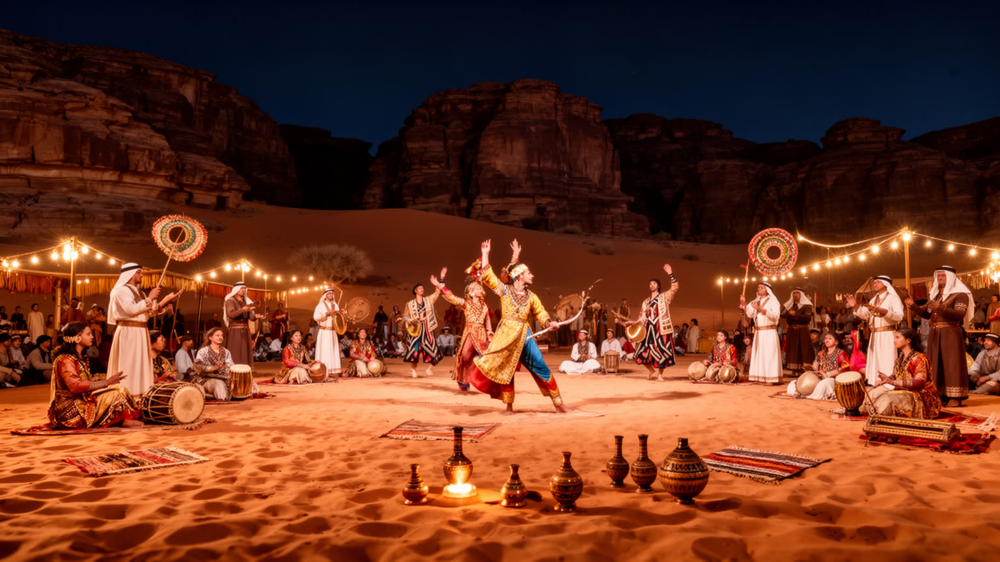
アルウラでは、遺産観光と並んで文化祭、音楽、現代アート、スポーツ、食の催しが都市の印象を作っています。冬の過ごしやすい季節に開かれるイベントは、砂岩の谷や星空を舞台装置にし、国内外の来訪者へ新しいサウジ文化を示します。これは地域の経済に宿泊、交通、飲食、設営、警備、清掃、通訳、広報の仕事を生む一方、都市のイメージを外向きに編集する力も持ちます。イベントが成功するほど、地元の音楽、工芸、料理、語りが見える機会は増えるが、外部向けの洗練された演出が生活文化を単純化する危険もあります。文化祭は、古代遺産を静かな過去としてではなく、現代の表現と結びつける試みです。ただし、地域の人が観客だけでなく企画者、出演者、事業者として関われるかが重要になります。短期の催しが終わった後に技能、収入、公共空間、若者の進路が残るなら、イベントは都市の力になります。反対に、季節的な消費だけなら、砂漠は背景として使われるだけになります。アルウラの文化表現を読むことは、国家的なイメージ戦略と、地域の誇り、宗教的節度、家族の生活がどう折り合うかを見ることでもあります。観光客向けの舞台だけでなく、学校の発表、家庭のもてなし、職人の実演、地元店の料理にも文化は宿ります。大きな祭りがそれらを押しのけず、むしろ可視化する時、都市の表現は厚みを持ちます。一過性の舞台で終わらず、地元の表現者が経験を積める場になることが大切です。
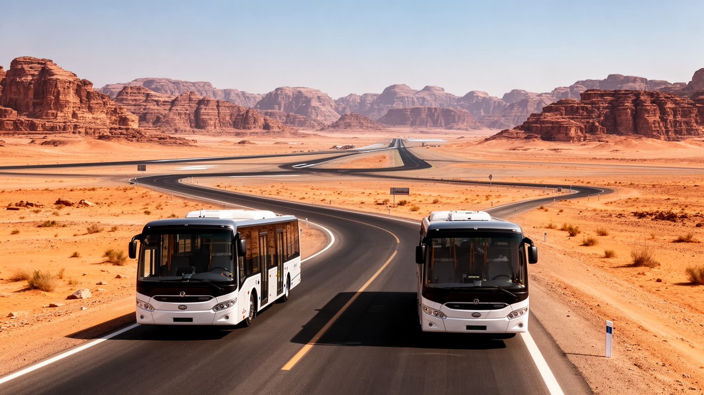
アルウラは遠隔地の印象が強いが、歴史的には交易と巡礼の道に結ばれた場所でした。現代のアクセスは、空港、マディーナやタブーク方面への道路、観光シャトル、専用車、ツアーバスによって再編されています。空路が整うと、リヤド、ジェッダ、湾岸、欧州からの旅行者は短い休暇でアルウラへ入れるようになり、観光地としての距離は一気に縮まります。しかし都市内部では、遺跡、旧市街、農地、ホテル、保護区が広く散らばるため、移動は車に依存しやすいです。公共交通が弱いまま高級観光だけが進むと、住民の通勤や若い労働者の移動、低予算の旅行者には負担が残ります。交通は単なる便利さではなく、誰が遺産へ近づけるか、収入がどの地区に落ちるか、混雑や排気がどこに出るかを決める都市政策です。古いヒジャーズ鉄道の記憶も、アルウラを広域の巡礼路と結び直す重要な手がかりになります。駅跡や道の痕跡を見れば、近代以前からこの谷が外の世界と接続していたことが分かります。観光都市として成熟するには、空港の華やかさだけでなく、住民の足、歩行者の安全、環境負荷の小さい移動をどう整えるかが問われます。夜間イベントの帰路、暑い午後の停留所、農園と市街を結ぶ短距離移動まで考えると、アクセスは旅行者だけの問題ではありません。日常の移動を軽くする交通こそ、観光投資を生活の改善へ変えます。
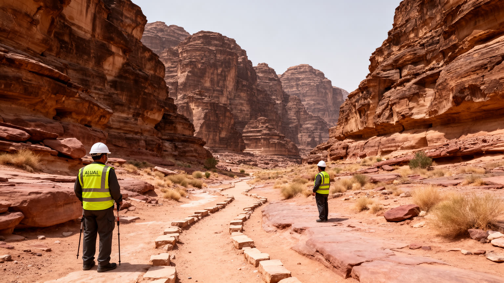
アルウラの魅力は、同時に壊れやすさでもあります。砂岩の墓や碑文は風、雨、温度差、人の接触で少しずつ摩耗し、オアシスの水は農業、ホテル、造園、住民生活の間で配分を迫られます。自然保護区では野生生物の回復や植生の保護が進むが、道路、宿泊施設、イベント、観光車両が増えれば、静けさや生態系に圧力がかかります。保全は遺跡を囲って終わる作業ではありません。訪問者数の管理、案内ルート、監視、研究、住民の土地利用、廃棄物、水、景観規制をまとめて考える必要があります。観光収入は保全費を生むが、観光そのものが負荷になるという矛盾は避けられません。さらに、保護の名の下に住民の移動や改築が過度に制限されれば、遺産は地域の誇りではなく負担として受け止められます。アルウラの保全リスクを読むことは、古代の石を未来へ残すだけでなく、生活と自然が共存できる制度を作ることを意味します。訪問者にも、岩に触れない、決められた道を歩く、水を浪費しない、地域のルールを尊重する責任があります。世界遺産の価値は、静かな管理の積み重ねによって初めて守られます。保全の成果は目立ちにくいが、崩落を防ぐ小さな補修、説明板の位置、人数制限、清掃の頻度が遺跡の寿命を左右します。派手な開発より地味な維持管理が、アルウラの信頼を長く支えます。長期の信頼は、訪問者数よりも壊さず使う作法の共有から生まれます。
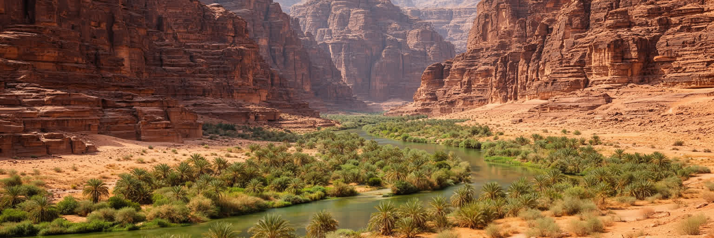
アルウラは人口規模だけなら小さな町ですが、都市としての意味は大きいです。ここには、古代アラビアの交易、ナバテアの墓、ダダーンとリヒヤーンの碑文、イスラムの巡礼路、オアシス農業、国家主導の観光開発、自然保護、住民の日常が一つの谷に重なっています。世界的な旅行者は、砂岩の造形や高級リゾートに引かれます。しかし都市を読むなら、農園の水、学校へ向かう道、ガイドの労働、清掃や警備、家族の住宅、研究者の調査、保全担当者の判断も同じ地図に置く必要があります。アルウラの課題は、過去を見せることではなく、過去を使って現在の地域をどう豊かにするかにあります。観光が外部の消費だけで終われば、砂漠の景観は商品になり、住民は背景にされます。収入が教育、技能、農業、公共交通、水管理、文化の継承へ戻るなら、遺産は生活の未来を支える資源になります。アルウラを深く見ることは、壮大な石の風景と同じ重さで、そこで働き、暮らし、守る人びとの時間を見ることです。その視点を持つ時、アルウラは単なる秘境ではなく、文化観光の可能性と危うさを同時に示す現代都市として立ち上がります。砂漠の静けさは魅力ですが、都市の価値は静止ではなく調整にあります。過去を守りながら住民の選択肢を増やせるかが、この谷の未来を決めます。旅行者のまなざしも、その循環を支える責任を持ちます。だから小さな統計だけでなく、変化の速度と生活への配分を見る必要があります。